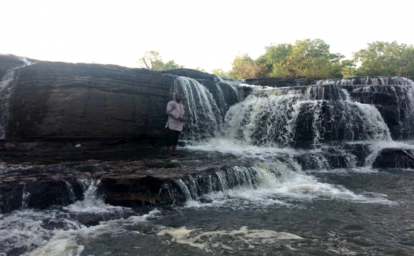
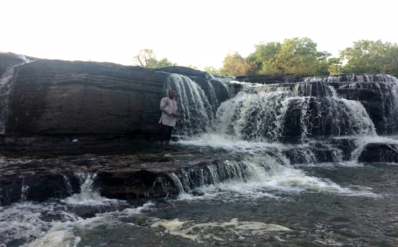

.jpeg)
Un joyau naturel du Burkina Faso à découvrir absolument
Situées à environ 12 km de Banfora, dans la région des Cascades au Burkina Faso, les Cascades de Karfiguéla offrent un spectacle naturel d'une beauté saisissante. Ces chutes d'eau, alimentées par la rivière Komoé, sont l'une des principales attractions touristiques du pays.
Le site est composé de plusieurs niveaux de cascades, s'étendant sur une zone verdoyante et paisible, idéale pour la détente, la baignade et les pique-niques. Entourées de formations rocheuses uniques et de végétation luxuriante, les cascades offrent un cadre parfait pour les amoureux de la nature.
Meilleure période pour visiter : De juin à octobre, pendant la saison des pluies, pour admirer les cascades à leur plein débit.
Accès : Depuis Banfora, il est facile de rejoindre les cascades en taxi, à vélo ou même à pied pour les plus aventureux.
Tarif : Une petite contribution est demandée à l'entrée pour l'entretien du site.
Conseils : Apportez des chaussures adaptées pour marcher sur les rochers, de l'eau, un maillot de bain, et surtout, respectez la nature.
.jpeg)
.jpeg)
.jpeg)
.jpeg) 

.jpeg)
Les cascades se trouvent dans le sud-ouest du Burkina Faso, près de la ville de Banfora.